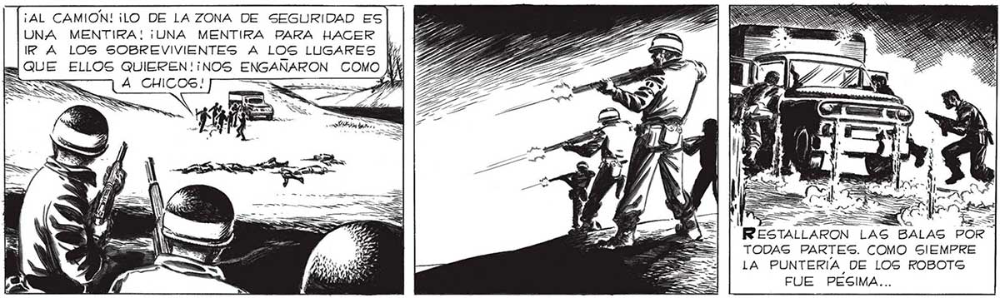
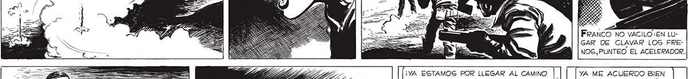
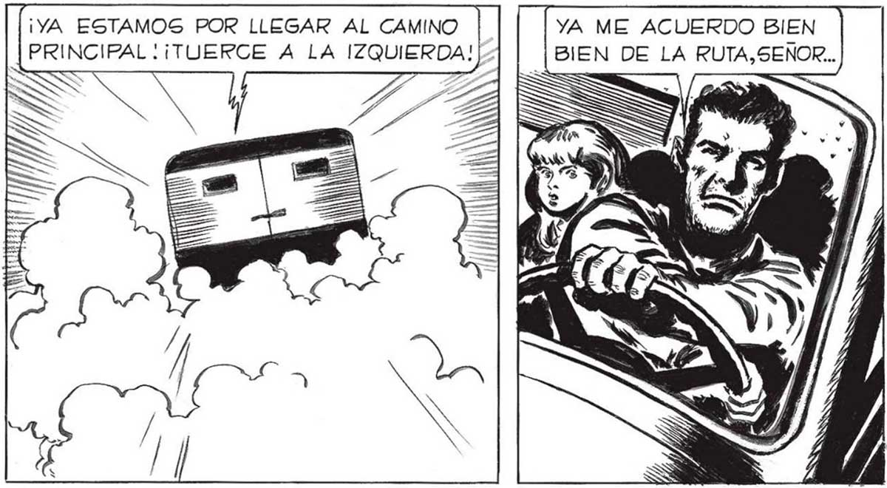

342 ¡AL CAMION! ¡LO DE LAZONA DE SEGURIDAD ES UNA MENTIRA! ¡UNA MENTIRA PARA HACER IRA LOS SOBREVIVIENTES A LOS LUGARES Ll QUE ELLOS QUIEREN! ¡NOS ENG =S A CHICOS! ¡CUIDA LAS MUNICIONES, JUAN! A => pr —_ SS RESTALLARON OR TODAS PARTES. COMO SIEMPRE LA PUNTERÍA DE LOS ROBOTS FUE PESIMA... | | Franco Hizo A ADE RRANCAR EL CAMION.. ¡ACELERA A FONDO, FRANCO! Sl CONSEGUIMOS SA- ¡CUIDADO! ¡NOS LIR AL CAMINO PRINCIPAL QUIZA ESTEMOS SALVADOS... Ss A a. 25d Ly A] S ISS A y dd Y OS EEES — E y: S SS les ( ¿ A OS Mon h ” / lo == $ AO xn wo oa IES AS EA 2 a e 7 S, A eS o, FRANCO NO VACILO:EN LUGAR DE CLAVAR LOG FRENOG,PUNTEO El ACELERADOR. ¡YA ESTAMOS POR LLEGAR AL CAMINO YA ME ACUERDO BIEN PRINCIPAL .¡TUERCE A LA IZQUIERDA! | BIEN DE LA RUTA,SENOR...


